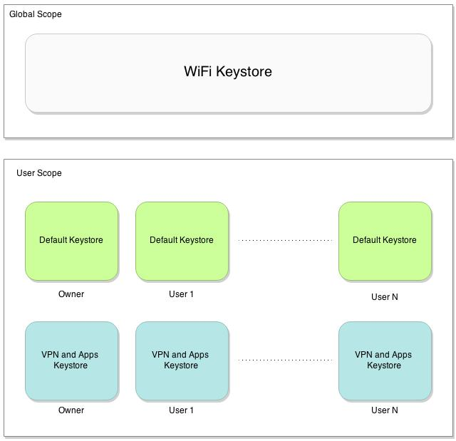

Android KeyStore Multiuser Design
Android 4.3 introduces multiuser support on VPN and Apps keystore. With this, it is possible to store certificates and private keys which are available for a specific user.
There are three kinds of keystore:
Default keystore: This keystore keeps CA certificates and it is used by Browser and Email to verify if a certain entity is trusted or not.
WiFi keystore: Certificates installed into this keystore are used for Wifi authentication. It keeps both CA and user certificates.
VPN and Apps keystore: Certificates installed into this keystore are used for VPN connections and by some applications such as Browser. It keeps both CA and user certificates and works as a complement of Android Default keystore.
As you can see in the Picture 1 bellow, Default and WiFi keystores are Global Scope while VPN and Apps Keystore is User Scope:

Picture 1: Android Keystore Multiuser Design